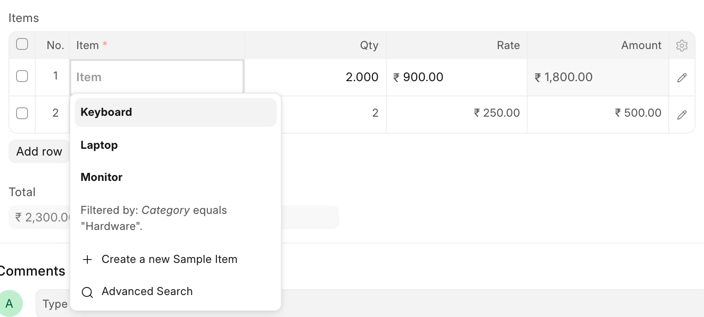

Link and Select Fields¶
Use these fieldtypes when a value must come from a list. A Link points to one document of a fixed DocType. A Dynamic Link points to a document of a DocType that another field holds. A Select takes one value from a fixed list. An Autocomplete suggests values but does not check them on the server. All four store one string in a column of the parent table. For column types and the rules for options, see Field Types. For properties that apply to all fields, see Field Properties.
Summary¶
| Fieldtype | options |
Desk control | Server check on save |
|---|---|---|---|
Link |
Target DocType | Search input with a dropdown | Target document must exist and must not be cancelled |
Dynamic Link |
Fieldname that holds the target DocType | Same as Link |
Same as Link. The DocType field must have a value. |
Select |
Values, one per line | <select> list |
Value must be one of the options |
Autocomplete |
Suggestions, one per line, or a JSON list | Input with suggestions | None |
Link¶
- Stores: the
nameof the linked document as astr, orNone. REST JSON has the same string. The value is always thename, also when the desk shows a title. - Desk: an input with a dropdown. Focus on an empty input opens the list at once. Typing searches again 500 ms after the last key. The dropdown shows up to
link_field_results_limitrows (System Settings, default 10). Each row shows the label in bold and the values of the search fields below it. - Properties:
options(target DocType),ignore_user_permissions,link_filters,remember_last_selected_value,fetch_fromon other fields,fetch_if_empty. See Field Properties. - Server:
_validate_links()infrappe/model/document.py. See Server validation. - JS:
frappe.ui.form.ControlLinkinfrappe/public/js/frappe/form/controls/link.js.
{
"fieldname": "item",
"fieldtype": "Link",
"label": "Item",
"options": "Sample Item",
"reqd": 1
}
The dropdown¶
After the search results, the dropdown adds these rows:
| Row | When it shows |
|---|---|
Filtered by: ... |
The field has filters, or the df has filter_description. The text describes the filters. It cannot be selected. |
Create a new <DocType> |
The user can create the target DocType and the df has no only_select. |
| Custom rows | frappe.ui.form.ControlLink.link_options(control) returns a list of rows. |
Advanced Search |
In the desk, not in web forms. Opens a search dialog with filters. |

The arrow button next to a value opens the linked document. It is hidden when the user has only select permission on the target DocType. A clear (x) button shows only when System Settings has allow_clearing_link_fields set.
Create a new <DocType> opens the quick entry dialog of the target DocType. If the DocType has no quick entry, it opens the full form. The typed text goes to the new document as name_field in frappe.route_options. After the new document is saved, its name is set in the Link field. To fill more fields in the new document, set df.get_route_options_for_new_doc to a function that gets the field control and returns an object of values.
How the search works¶
The desk calls frappe.desk.search.search_link. Without a custom query, search_widget() in frappe/desk/search.py builds the query:
- It matches the text with
LIKE %txt%onname, the DocTypetitle_fieldand the DocTypesearch_fields. Only fields of typeData,Text,Small Text,Long Text,Text Editor,Link,Select,Read OnlyandAutocompleteare matched. - It adds the filters of the field.
- It removes disabled records. A
Checkfieldenabledmust be 1. ACheckfielddisabledmust not be 1. To include disabled records, add the filterinclude_disabled: 1. - It applies the read permission and the User Permissions of the user, with
frappe.get_list. - It sorts by position of the text in
name, then byidxdescending, then by the DocType sort order. Results that start with the text come first.
idx on the target documents counts how often they were linked. The count is sampled for 10% of requests and skipped for some DocTypes, for example User and Role. See frappe/model/utils/link_count.py.
Call the endpoint directly to test a search:
curl -b cookies.txt -G "http://frappe.localhost:8006/api/method/frappe.desk.search.search_link" \
--data-urlencode doctype="Sample Item" \
--data-urlencode txt="o" \
--data-urlencode 'filters={"category": "Hardware"}'
{"message": [
{"value": "Keyboard", "description": "Keyboard", "label": "Keyboard"},
{"value": "Laptop", "description": "Laptop", "label": "Laptop"},
{"value": "Monitor", "description": "Monitor", "label": "Monitor"}
]}
search_link arguments:
| Argument | Type | Default | Description |
|---|---|---|---|
doctype |
str | Target DocType. | |
txt |
str | Search text. | |
query |
str | None |
Dotted path of a whitelisted custom query. |
filters |
dict, list or JSON str | None |
Filters in the frappe.get_list format. |
page_length |
int | 10 |
Number of rows. |
searchfield |
str | None |
Extra field to return. Passed to a custom query. |
reference_doctype |
str | None |
DocType of the form that holds the field. |
ignore_user_permissions |
bool | False |
Skip User Permissions. Needs reference_doctype and link_fieldname. |
link_fieldname |
str | None |
Fieldname of the Link field. |
start |
int | 0 |
Offset for paging. |
include_image |
bool | False |
Add image to each row from the DocType image_field. |
keep_order |
bool | False |
Keep the SQL order. Skip the sort that puts names that start with the text first. The combobox control sends it. |
ignore_user_permissions is checked on the server. The field link_fieldname in reference_doctype must have ignore_user_permissions = 1 and must not be read-only or hidden. Otherwise the search throws an error or keeps the User Permissions.
Filter the dropdown¶
There are three ways to filter. All three apply in the desk only. The server accepts any existing record on save.
| Method | Where | Example |
|---|---|---|
link_filters |
DocField property, JSON | [["Sample Item", "category", "=", "Hardware"]] |
frm.set_query |
Form script | frm.set_query("item", "items", () => ({ filters: { category: "Hardware" } })) |
df.filters |
Dialog or field group df | { fieldtype: "Link", options: "Sample Item", filters: { disabled: 0 } } |
A link_filters value can start with eval:. The desk evaluates it with doc, parent and frappe in scope, for example "eval:doc.category". link_filters replace filters on the same fieldnames from set_query.
frm.set_query(fieldname, fn) sets the query of a parent field. frm.set_query(child_fieldname, table_fieldname, fn) sets it for a column of a child table. The function gets (doc, cdt, cdn) and returns one of these:
{ filters: {...} }or{ filters: [[...], ...] }for filters.{ query: "dotted.path", filters: {...} }for a custom server query.- A string with the dotted path of a custom query.
Filter keys with an empty value are removed when the key is a Link or Dynamic Link field of the form. See Form Scripts for where to call set_query.
Custom server query¶
Use a custom query when filters cannot express the list. Write a whitelisted function with this signature. Return a list of tuples. The first value is the document name. The other values show as the description.
# sample_app/api.py
import frappe
@frappe.whitelist()
@frappe.validate_and_sanitize_search_inputs
def item_query(doctype: str, txt: str, searchfield: str, start: int, page_len: int, filters: dict):
return frappe.get_list(
"Sample Item",
filters={"disabled": 0, "category": filters.get("category") or "Hardware"},
or_filters={"name": ["like", f"%{txt}%"], "item_name": ["like", f"%{txt}%"]},
fields=["name", "category", "rate"],
limit_start=start,
limit_page_length=page_len,
order_by="name asc",
as_list=True,
)
// sample_app/sample_module/doctype/sample_order/sample_order.js
frappe.ui.form.on("Sample Order", {
setup(frm) {
frm.set_query("item", "items", () => ({
query: "sample_app.api.item_query",
filters: { category: "Hardware" },
}));
},
});
The search shows Laptop with the description Hardware, 900.0. Frappe also passes as_dict, reference_doctype, ignore_user_permissions and link_fieldname as keyword arguments, if the function accepts them. frappe.validate_and_sanitize_search_inputs rejects a searchfield with special characters and converts start and page_len to integers. If doctype is not an existing DocType, it returns [] and does not call the function. It reads the arguments doctype, searchfield, start and page_len, so the function must have all of them.
To use one query for every Link field to a DocType, add the standard_queries hook. Frappe uses the last value when several apps set the same DocType. Frappe itself sets one for User.
# sample_app/hooks.py
standard_queries = {"Sample Item": "sample_app.api.item_query"}
Validation in the desk¶
When the user leaves the field or picks a row, the control calls frappe.client.validate_link_and_fetch. The call uses the same filters and query as the search.
- If the record exists and passes the filters, the value is set with the case of the stored name. For example,
laptopbecomesLaptop. - If the record does not exist or is filtered out, the field is cleared. With filters, an alert shows "
- The same call returns the values for fields with
fetch_fromon this Link, and the control sets them.
With a custom query, the value passes only if the query returns it when txt is the full name. frm.set_value() and frappe.model.set_value() skip this validation and do not run fetch_from. The server fills fetch_from fields on save.
Link titles¶
Set show_title_field_in_link = 1 and a title_field on the target DocType to show titles. The input shows the title, for example User 1, and the field stores the name user1@example.com. The dropdown shows the title as the label and the name in the description. The list of these DocTypes is in frappe.boot.link_title_doctypes.
When a form loads, frappe/desk/form/load.py sends the titles of all Link and Dynamic Link values, also in child tables. For other values the control calls frappe.desk.search.get_link_title. That method returns the name when the user cannot read the title field.
Set translated_doctype = 1 ("Translate Link Fields") on the target DocType to show translated names. The search then matches the translated text.
Server validation¶
_validate_links() in frappe/model/document.py runs on insert and save, for the parent and all child rows. For each Link and Dynamic Link field with a value:
| Check | Error |
|---|---|
| The target document exists. | frappe.LinkValidationError: Could not find Item: Nope. In a child row: Could not find Row #1: Item: Nope. |
The parent and the target DocType are submittable, and the target is cancelled. amended_from is skipped. |
frappe.CancelledLinkError: Cannot link cancelled document: ... |
The check also sets the value to the name as stored, and sets the fields that use fetch_from on this Link. It does not apply link_filters, set_query or custom queries. To skip it, set doc.flags.ignore_links = True. It does not run on cancel.
Frappe also protects links in the other direction. Deleting a document that other documents link to raises frappe.LinkExistsError. Renaming a document updates the Link fields that point to it.
Dynamic Link¶
- Stores: a document name as a
str, likeLink. - Desk: the same control as
Link. The target DocType is the current value of the field named inoptions. If that field is empty, the dropdown does not search. If it names a Single DocType, the desk throws "is not a valid DocType for Dynamic Link". - Properties:
options(fieldname of aLinktoDocTypeor of aSelectfield),ignore_user_permissions. - Server: the same checks as
Link. If the DocType field is empty, the save throws<label> must be set first. - JS:
frappe.ui.form.ControlDynamicLinkindynamic_link.js. It reads the DocType from the form, or fromcur_dialog.get_value(options)in a dialog. Setdf.get_optionsto a function that returns the DocType to override this.
[
{"fieldname": "reference_doctype", "fieldtype": "Link", "options": "DocType", "label": "Reference DocType"},
{"fieldname": "reference_name", "fieldtype": "Dynamic Link", "options": "reference_doctype", "label": "Reference Name"}
]
Select¶
- Stores: one option as a
str. An empty first line inoptionsallows a blank value. - Default: if
defaultis empty, a new document gets the first option. This applies in the desk (frappe/public/js/frappe/model/create_new.js) and on the server (frappe/model/create_new.py). So a Select whose first option is not blank always has a value. - Desk: a
<select>element. Each label is translated with the DocType as context, and the stored value stays untranslated.placeholdershows when the value is blank. In grid cells, the value is shown translated. - Properties:
options,default,sort_options(sort by translated label, desk only),placeholder. - Server:
_validate_selects()strips spaces from the value and checks it againstoptions. A wrong value throwsValidationError, for exampleStatus cannot be "Weird". It should be one of "Open", "Closed", "Cancelled"on aToDo. The check skips empty values,naming_series, fields without options, and data import (frappe.flags.in_import). - DocType save: options are stripped, and empty lines are removed except the first. A
defaultmust be one of the options. - JS:
frappe.ui.form.ControlSelectinselect.js.
Change the options at runtime with frm.set_df_property. Pass a string with one value per line, or an array. Array items can be strings or objects with value, label and optional disabled.
frm.set_df_property("status", "options", ["Draft", "Open"]);
frm.set_df_property("status", "options", [
{ value: "Open", label: __("Open") },
{ value: "Completed", label: __("Done"), disabled: true },
]);
frm.set_value() with a value that is not an option still sets it in frm.doc. The server rejects it on save.
{
"fieldname": "status",
"fieldtype": "Select",
"label": "Status",
"options": "Draft\nOpen\nCompleted\nCancelled",
"default": "Draft"
}
Autocomplete¶
- Stores: a
str. The server does not compare it withoptions. Any value is saved. - Desk: an input with a suggestion list. The list is filtered in the browser, and the text can match the label, value or description. It shows up to
df.max_itemsrows (default 99). When the user leaves the field, a value that is not a suggestion is cleared. If there are no suggestions, any value is kept. - Options: one value per line, or a JSON list that starts with
[. JSON items can be strings or objects withvalue,labelanddescription. The input shows the label and stores the value. The special valueInstalled Applicationsloads the installed apps. - JS:
frappe.ui.form.ControlAutocompleteinautocomplete.js. Setdf.ignore_validation = 1to keep typed values that are not suggestions.
To load suggestions from the server, use set_query. The control calls the method with txt and the keys of params. The method returns a list of strings or of objects with value and label.
frm.set_query("autocomplete", () => ({
query: "sample_app.api.get_colors",
params: { palette: "basic" },
}));
# sample_app/api.py
@frappe.whitelist()
def get_colors(txt: str = "", palette: str | None = None):
return [c for c in ["Red", "Green", "Blue"] if txt.lower() in c.lower()]
Combobox controls (beta)¶
System Settings has enable_combobox_link_field ("Enable Combobox Fields (Beta)"), off by default. When it is on, Link, Dynamic Link, Autocomplete and Table MultiSelect fields use the Control<Fieldtype>Combobox classes, for example ControlLinkCombobox in link_combobox.js. They accept the same hooks as the classic controls. They always show a clear button.
Two DocType properties change how a combobox Link to that DocType works. The classic Link control ignores them.
| DocType property | Default | Effect |
|---|---|---|
link_display_mode |
Search |
Select loads the whole list once and hides the search box. A list longer than 1000 rows, or a custom query, uses Search. |
show_image_in_link |
0 |
Shows the DocType image_field as an avatar in the dropdown and the input. |
A combobox Link also accepts map_options(rows, { query, start }) on the control or the df. Use it to change, remove or group the rows before they show.
Pitfalls¶
link_filters,set_queryand custom queries filter the desk only. Check the rule again in the controllervalidateif it matters.- A custom query must return the exact name when
txtis the full name. Otherwise the desk clears a valid value. frappe.model.set_value()on a Link does not runfetch_fromin the browser. Set the fetched values in your script, or let the save fill them.- A
Selectwithout a blank first option is never empty on a new document. Autocompletevalues are not validated on the server. UseSelectorLinkwhen the value must be from a list.- Select validation does not run during data import.